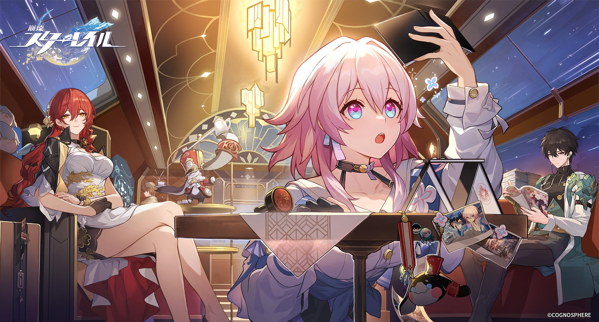

はじめに
本サイト「Tsuyu's game page」は著者であるTsuyuがゲームに関する内容を投稿するサイトとなっています。
おすすめゲーム4選
本記事では様々なジャンルのゲームをプレイする私が個人的におすすめするゲームを4選紹介します!
-
広大な世界を駆け巡るオープンワールドRPGが楽しみたい方へ
1:原神(Genshin Impact) 引用:https://genshin.hoyoverse.com/ja/news/detail/103848
引用:https://genshin.hoyoverse.com/ja/news/detail/103848
-
「崩壊」シリーズ最新作！ストーリーとターン性バトルが楽しみたい方へ
2:崩壊：スターレイル  引用:https://x.com/houkaistarrail/status/1532572788875087872 -
実力が勝敗を分けるタクティカルFPSを楽しみたい方へ
3:VALORANT 引用:https://valorantors.com/post-waallpaper/
引用:https://valorantors.com/post-waallpaper/
-
壮絶なストーリーと高難易度のシュミレーションRPGを楽しみたい方へ
4:FIRE EMBLEM(ファイアー エムブレム)風花雪月 引用:https://saesipapictzxd.blogspot.com/2021/06/205963.html
コメント
これらのゲームはそれぞれ独自の魅力を持っており、楽しみ方は人それぞれです。ぜひ公式サイトや動画をチェックして、自分に合ったゲームを選んでください！